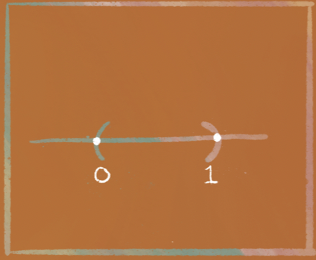

Open sets are not pancakes.
There are many reasons open sets are not pancakes. One is that pancakes are yummy.
| But it’s helpful to imagine covering someone with pancakes… | …when what you’re actually doing is covering a space with open sets. |
|
|
So, in this chapter, I conflate “pancakes” and “open sets.”
When you see a reference to “pancakes”, feel free to mentally cross it out and replace it with “open sets,” and vice versa, depending on your preference.
Given a particular friend…
…there are lots of ways to completely cover them with pancakes.
|
|
|
|
|
Similarly, given a set in space…
…there are a lot of ways to completely cover it with open sets. For example, $(0,1)$ could be covered by….
 |
|
|
 |
|
The open interval $(0,1)$ |
The open interval $(-1,2)$ |
The open interval $(-1,\frac{3}{4})$ and $(\frac{1}{4},2)$ |
The infinite collection of open intervals $\{(\frac{1}{n},1): n \in \mathbb{N}\}$ |
| Let’s say a “cover” of your friend … | …is a collection of pancakes… | …that covers every inch of them. |
| And let’s say a “cover” of a set $S$… | …is a collection of open sets… | …that completely contains $S$. |
|  |
Formally, a $\textit{cover}$ of $S$ is a collection $\mathcal{C}$ of open sets $U$ such that:
$$ S \subseteq \bigcup\limits_{U \in \mathcal{C}} U.$$
In other words, a cover $\mathcal{C}$ of the set $S$ is a collection of open sets $U$ (pancakes) such that if you take the union of all the open sets in the collection $\mathcal{C}$, it contains the set $S$.
Pancakes don’t grow on trees.
So ideally, we only use a finite number of pancakes.

|
| Note that some covers use finitely many pancakes. | And some covers use infinitely many. |

|

|
So, when I say a cover is finite, I mean the cover uses finitely many pancakes.
Formally, when I say that $\mathcal{C}$ is a finite cover, I mean that there are only finitely many open sets in $\mathcal{C}$. Of course, each of these open sets could contain infinitely many points.
Sometimes, we used more pancakes than we needed to completely cover a person.
So once you have a cover…
…you might want to eat the pancakes you didn’t need. A subcover is any subcollection of those pancakes that still covers your friend.
|
If it doesn’t completely cover your friend, it isn’t a subcover. |
And if it requires adding new pancakes that weren’t in the original cover, it isn’t a subcover either. |
|
|
|
Informally, a subcover is a cover …
…. after you’ve eaten some of the pancakes in it.
Formally, a subcover is a subcollection of a cover, that is still a cover.
So if you consider any particular cover…
…when you remove a pancake…
| …you might get a subcover of it. | …and you might not. |
|
|
|
|
Sometimes, you’ll start with an infinite cover… |
…and be able to remove enough pancakes to end up with a finite subcover. |
|
|
But other times, you won’t be able to.
For example, we suppose we want to cover the set $(-1,1)$…
with the following collection…
$$\left\{\left(-\frac{1}{2},\frac{1}{2}\right), \left(-\frac{3}{4},\frac{3}{4}\right), \left(-\frac{4}{5},\frac{4}{5}\right), \cdots \right\}$$
…which we can write succinctly as…
$$\left\{ \left(-\frac{n}{n+1},\frac{n}{n+1} \right) : n \in \mathbb{N}\right\}.$$
There is no way you can take away so many pancakes that you leave a finite number of pancakes there, and it still covers the set $(-1, 1)$.
Informally, this is because when you take any finite subset of the cover, you end up exposing a bit of edge of the set. You’ll prove it formally in the puzzle at the end of this section!
Ok fine, so we know that when you look at covering $(-1,1)$…
| There are some covers … | …that have finite subcovers. |

|
 |
| But there are other covers …. | that have no finite subcover. |
|
|
So what?
Here’s the big thing: there are some sets, which, given any cover of them, always reduce to a finite subcover. In those sets, any infinite cover will always have spare pancakes to munch on.
For example, look at $[-1,1]$.
| You can cover it the following way… | …and get a finite subcover. |
|
|
|
| Or you can cover it in the following way… | …and get a finite subcover. |
|
|
|
And in fact, it turns out, no matter how you cover the interval $[-1,1]$, you can reduce the cover to a finite subcover.
So what’s so great about this set?
It is so low-maintenance!
| Given an infinite amount of information about the set’s cover… |
…you can always just reduce that… |
…to a finite amount of information. |
So, let’s call any set like this a “compact set” as a thank-you to the conciseness of the information needed to describe any cover of the set.
Formally, let’s say a set is compact when every single cover of it (no matter how big) has a finite subcover.
|
So the set $[-1,1]$ is compact. |
Because (we’ll prove later) every cover of it has a finite subcover. |

|
|
But the set $(-1,1)$ is not compact. |
Because there is a cover of it with no finite subcover. |
|
|
“Compactness is the next best thing to finiteness,” says Prof. Francis Su.
It’s true. That is, a compact set may not be finite, but it’s the “next best thing” — any open cover of it can be reduced to a finite one.
This ability to reduce a lot of information to just a finite amount means compact sets are much easier to prove things about than other sets.
As a result, compact sets play a big role in differentiation and integration, as we’ll see later.
| We know $\left\{ \left(-\frac{n}{n+1},\frac{n}{n+1} \right) : n \in \mathbb{N}\right\}$ covers $(-1,1)$. |
Prove that no finite subset of it covers $(-1,1)$. |

If you had a finite subcover $\mathcal{F}$, then it has a “largest pancake.” That is, there is a largest value of $n$ such that the pancake $\left( -\frac{n}{n+1},\frac{n}{n+1} \right)$ is in $\mathcal{F}$.
Suppose the largest pancake in $\mathcal{F}$ is $\left( -\frac{N}{N+1},\frac{N}{N+1} \right)$.
Then, the interval $\left[\frac{N}{N+1}, 1\right)$ is uncovered…so $\mathcal{F}$ can’t be a cover.